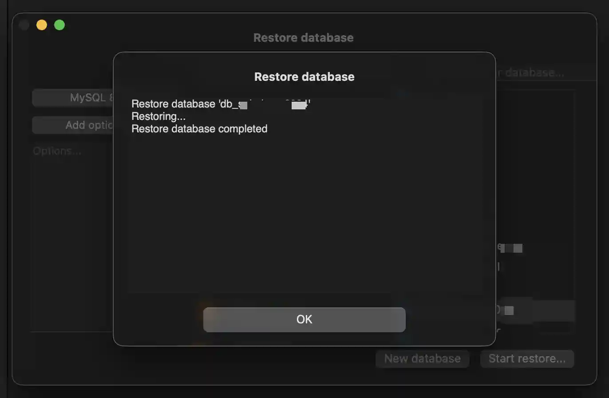

Writing ·
a small journey between two servers - restoring a database
Kadang perjalanan memindahkan database itu seperti perjalanan pulang kampung.
Fixing MySQL “DEFINER” Error When Restoring a Database
_—— a small journey between two servers, and sedikit kisah dalam bahasa yang lebih lembut_
Kadang perjalanan memindahkan database itu seperti perjalanan pulang kampung. Yang satu tinggal di VPS, yang satu di localhost. Dan saat kita mencoba _restore_, tiba-tiba muncul pesan error yang bikin berhenti sejenak:
ERROR 1449 (HY000): The user specified as a definer ('app_user'@'%') does not existAwalnya terlihat teknis, tapi sebenarnya pesannya sederhana:
“Di backup-mu ada sesuatu yang dibuat oleh user bernama
app_user,
dan di server lokal kamu… user itu gak ada.”
Objek yang biasanya membawa “DEFINER” ini adalah:
- Views
- Triggers
- Stored procedures / functions
- Events
Jadi wajar kalau restore-nya ditolak.

Kenapa Ini Terjadi?
Because MySQL is a bit strict —— _sedikit kaku_, seperti penjaga pintu yang hanya membuka untuk nama yang sesuai. Backup-mu bilang,
“Objek ini dibuat oleh
app_user@%.”
Tapi MySQL lokalmu menimpali,
“Siapa itu? Di daftar tamu nggak ada.”
Untungnya, ada beberapa cara sederhana untuk menyelesaikannya.
Cara Mengatasinya —— The Simple Ways
1. Membuat User yang Hilang (cara paling cepat dan bersih)
Ini seperti bikin identitas sementara supaya MySQL nggak protes lagi.
CREATE USER 'app_user'@'%' IDENTIFIED BY 'yourpassword';
GRANT ALL PRIVILEGES ON *.* TO 'app_user'@'%';
FLUSH PRIVILEGES;Setelah itu coba restore lagi —— biasanya langsung berhasil. User ini tidak harus dipakai login, MySQL hanya butuh namanya ada.
2. Menghapus “DEFINER” dari Backup (cara yang aman dan populer)
Kalau kamu nggak mau menambahkan user baru, kamu bisa membersihkan backup-nya.
macOS: hapus semua DEFINER
sed -i '' 's/DEFINER=`[^`]*`@`[^`]*`//g' backup.sqlAtau ubah definernya ke CURRENT_USER
sed -i '' "s/DEFINER=\`app_user\`@\`%\`/DEFINER=CURRENT_USER/g" backup.sqlSesudah itu, restore ulang. Selesai. Seperti menyapu halaman sebelum tamu datang.
3. Melakukan Dump Tanpa DEFINER dari VPS (cara terbaik untuk jangka panjang)
Ini solusi yang mencegah masalah yang sama di masa depan.
MySQL
mysqldump --set-gtid-purged=OFF --skip-definer --routines --events --triggers my_database > clean_backup.sqlMariaDB
mysqldump --skip-definer --skip-triggers --routines --events my_database > clean_backup.sqlBackup-mu jadi bersih. Seperti menulis ulang cerita tanpa menyebutkan siapa penulis lamanya.
Kesimpulan —— Choosing Your Path
Kalau kamu butuh cepat, bikin saja user app_user → langsung selesai.
Kalau kamu ingin backup bersih, hapus definernya.
Kalau kamu ingin perbaikan jangka panjang, ubah cara dump di VPS.
Database itu kadang ribut sendiri soal identitas pembuatnya —— tapi dengan sedikit sentuhan, semua kembali berjalan halus.